6 Python作图 {Python_plot_WXN}
6.1 绘图基础
6.1.1 Figure和Subplot
import matplotlib.pyplot as plt
import numpy as np
import pandas as pd
from numpy.random import randnx = [1, 3, 5, 7, 9, 10, 23, 45, 45, 56]
y = [2, 4, 6, 8, 11, 12, 23, 45, 56, 78]
fig = plt.figure() # 创建一个Figure
ax1 = fig.add_subplot(2, 2, 1) # 创建4个图的Figure对象，最后的1为选中第一个
ax2 = fig.add_subplot(2, 2, 2)
ax3 = fig.add_subplot(2, 2, 3)
ax4 = fig.add_subplot(2, 2, 4)
ax1.hist(x, y) # 在第一图中绘制直方图
ax2.scatter(x, y) # 散点图
ax4.plot(x, y) # 线图
plt.show()
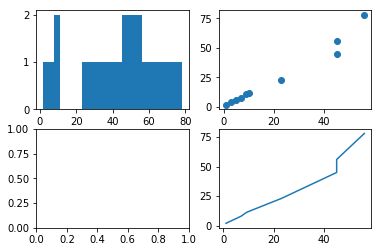
png
fig, axes = plt.subplots(2, 3) # 创建一个Figure 绘制2 X3 图
fig
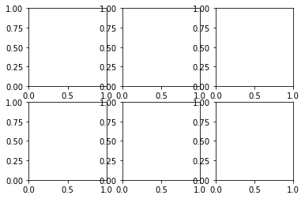
png
axesarray([[<matplotlib.axes._subplots.AxesSubplot object at 0x7f8436a71780>,
<matplotlib.axes._subplots.AxesSubplot object at 0x7f842f2438d0>,
<matplotlib.axes._subplots.AxesSubplot object at 0x7f842f27d9e8>],
[<matplotlib.axes._subplots.AxesSubplot object at 0x7f842f236978>,
<matplotlib.axes._subplots.AxesSubplot object at 0x7f842f1f19b0>,
<matplotlib.axes._subplots.AxesSubplot object at 0x7f842f199710>]], dtype=object)创建2 X 3图像，可以相当于对二维数组进行索引 参数 说明 nrows subplot行数 ncols subplot列数 sharex 所有图使用相同的x轴 sharey 所有图使用相同的y轴 subplot_kw 用于创建各subplot的关键字字典|
6.1.2 调整subplot周围间距
subplots_ajust(left=None,bottom=None,right=None,top=None,wspace=None,hspace=None)
wspace和hspace控制宽度和高度fig, axes = plt.subplots(2, 2, sharex=True, sharey=True)
for i in range(2):
for j in range(2):
axes[i, j].hist(randn(500), bins=50, color='k', alpha=0.5)
plt.subplots_adjust(wspace=0, hspace=0)
plt.show()png
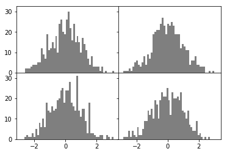
png
fig, axes = plt.subplots(2, 2, sharex=True, sharey=True)
for i in range(2):
for j in range(2):
axes[i, j].hist(randn(500), bins=50, color='k', alpha=0.5)
plt.subplots_adjust(wspace=2, hspace=0.5)
plt.show()
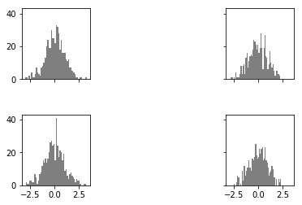
png
figpng
6.1.3 颜色 标记和线型
"""
绘制绿色虚线
ax.plot(x,y,'g--')
另一种方式
ax.plot(x,y,linestyle='--',color='g')
标记点（maker）
"""
fig, axes = plt.subplots(1, 2)
axes[0].plot(randn(10), 'g--') # green ---
axes[1].plot(randn(10), 'ko--') # k：black o：圆点
plt.show()
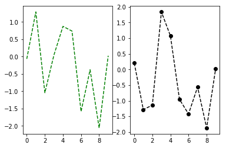
png
character description
'-' solid line style
'--' dashed line style
'-.' dash-dot line style
':' dotted line style
'.' point marker
',' pixel marker
'o' circle marker
'v' triangle_down marker
'^' triangle_up marker
'<' triangle_left marker
'>' triangle_right marker
'1' tri_down marker
'2' tri_up marker
'3' tri_left marker
'4' tri_right marker
's' square marker
'p' pentagon marker
'*' star marker
'h' hexagon1 marker
'H' hexagon2 marker
'+' plus marker
'x' x marker
'D' diamond marker
'd' thin_diamond marker
'|' vline marker
'_' hline marker
The following color abbreviations are supported:
character color
‘b’ blue
‘g’ green
‘r’ red
‘c’ cyan(青色)
‘m’ magenta（紫红色）
‘y’ yellow
‘k’ black
‘w’ white
https://matplotlib.org/api/_as_gen/matplotlib.pyplot.plot.html#matplotlib.pyplot.plot6.1.4 刻度、标签和图例
fig = plt.figure() # 创建一个Figure
ax = fig.add_subplot(1, 1, 1)
ax.plot(randn(100))
plt.show()
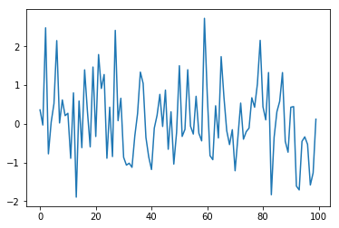
png
"""修改上图的轴"""
fig = plt.figure()
ax = fig.add_subplot(1, 1, 1)
ax.plot(randn(100))
ticks = ax.set_xticks([0, 25, 50, 75, 100]) # 设置刻度
labels = ax.set_xticklabels(
['first', 'second', 'third', 'forth', 'fifth'], rotation=30, fontsize='small') # 设置x轴标签
ax.set_title('my first matplot plot') # 设置图片标题
ax.set_xlabel('Stages') # 设置x轴名称
plt.show()
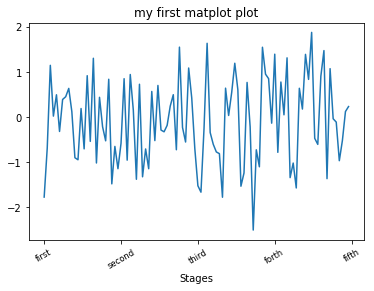
png
6.1.5 添加图例legend
https://matplotlib.org/api/legend_api.html?highlight=legend#module-matplotlib.legend
‘best’ 0
‘upper right’ 1
‘upper left’ 2
‘lower left’ 3
‘lower right’ 4
‘right’ 5
‘center left’ 6
‘center right’ 7
‘lower center’ 8
‘upper center’ 9
‘center’ 10
bbox_to_anchor=（0.5,0.8）
bbox_to_anchor被赋予的元组中，第一个数值用于控制legend的左右移动，值越大越向右边移动，
第二个数值用于控制legend的上下移动，值越大，越向上移动
fig = plt.figure()
ax = fig.add_subplot(1, 1, 1)
ax.plot(randn(10), 'k', label='one') # 画一条线，k黑色
ax.plot(randn(10), 'g--', label='two') # 画第二条线，g绿色 - -类型
ax.plot(randn(10), 'ro--', label='three') # 画第三条线红色 ，类型 ...
ax.legend(loc=0, bbox_to_anchor=(1, 1))
plt.show()
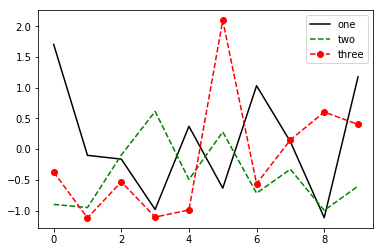
png
6.1.6 注解
x = [2, 4, 6, 8, 10, 12]
y = [1, 3, 5, 7, 9, 11]
fig = plt.figure()
ax = fig.add_subplot(1, 1, 1)
ax.plot(x, y, 'r--')
ax.text(2, 4, 'hello python')
plt.show()
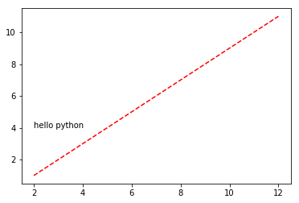
png
ax = plt.subplot(111)
t = np.arange(0.0, 5.0, 0.01)
s = np.cos(2 * np.pi * t)
line, = plt.plot(t, s, lw=2)
plt.annotate('local max', xy=(2, 1), xytext=(3, 1.5),
arrowprops=dict(facecolor='blue') # xy=（要注释的点），xytext=(注释在图中的位置)
)
plt.ylim(-2, 2)
plt.show()
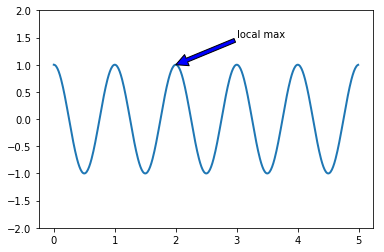
png
6.1.7 图片保存
x = [2, 4, 6, 8, 10, 12]
y = [1, 3, 5, 7, 9, 11]
fig = plt.figure()
ax = fig.add_subplot(1, 1, 1)
ax.plot(x, y, 'r--')
ax.text(2, 4, 'hello python')
# bbox_inches减除当前图片周围空白部分
plt.savefig('figpath.jpg', dpi=300, bbox_inches='tight')6.2 绘图实例
6.2.1 绘制散点图
x = [1, 2, 3, 4, 5, 6]
y = [1, 4, 9, 16, 25, 36]
plt.scatter(x, # x轴数据
y, # y轴数据
s=20, # 设置点的大小
c='green', # 设置点的颜色
marker='s', # 设置点的形状
alpha=0.9, # 设置点的透明度
linewidths=0.8, # 设置散点边界的粗细
edgecolors='red' # 设置散点边界的颜色
)
plt.title('simple scatter plot')
plt.xlabel('X') # x轴名称
plt.ylabel('Y')
plt.show() # 展示绘图
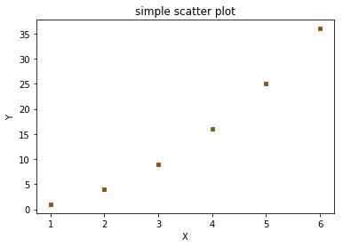
png
6.2.2 折线图
x = [1, 2, 3, 4, 5, 6]
y = [1, 4, 9, 16, 25, 36]
plt.plot(x, # x轴数据
y, # y轴数据
linestyle='-', # 折线类型
linewidth=2, # 折线宽度
color='blue', # 折线颜色
marker='o', # 点的形状
markersize=8, # 点的大小
markeredgecolor='black', # 点的边框色
markerfacecolor='red') # 点的填充色
# 添加标题和坐标轴标签
plt.title('line plot')
plt.xlabel('X')
plt.ylabel('Y')
plt.show()
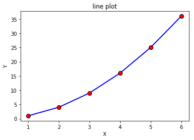
png
import numpy as np
import matplotlib.pyplot as plt
t = np.arange(0., 5., 0.2)
tarray([ 0. , 0.2, 0.4, 0.6, 0.8, 1. , 1.2, 1.4, 1.6, 1.8, 2. ,
2.2, 2.4, 2.6, 2.8, 3. , 3.2, 3.4, 3.6, 3.8, 4. , 4.2,
4.4, 4.6, 4.8])# red dashes, blue squares and green triangles
plt.plot(t, t, 'r--', t, t**2, 'bs', t, t**3, 'g')
plt.show()
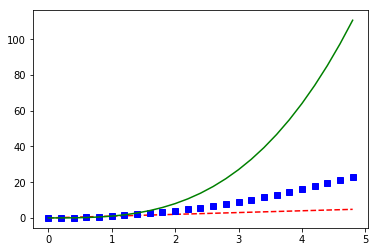
png
# 同一效果
fig = plt.figure()
ax = fig.add_subplot(1, 1, 1)
ax.plot(t, t, 'r--')
ax.plot(t, t**2, 'bs') # 'bs'表示blue square marker
ax.plot(t, t**3, 'g')
figpng
6.2.3 直方图
import numpy as np
import pandas as pd
import matplotlib.pyplot as plt
plt.hist(np.random.randn(50), # 绘图数据
bins=50, # 指定直方图的条形数
color='red', # 指定填充色
edgecolor='k') # 指定直方图的边界色k :black
plt.show()
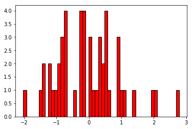
png
6.2.4 直条图
x = [1, 2, 3, 4, 5, 6]
y = [1, 4, 9, 16, 25, 36]
plt.bar(x, y,
color='steelblue',
alpha=0.8)
plt.title('bar plot')
plt.ylim([0, 40])
plt.show()
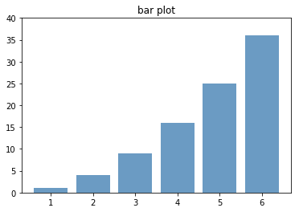
png
x = [1, 2, 3, 4, 5, 6]
y = [1, 4, 9, 16, 25, 36]
plt.barh(x, y,
color='steelblue',
alpha=0.8)
plt.title('bar plot')
plt.show()
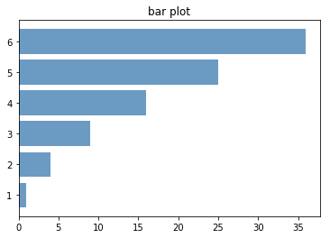
png
6.2.5 箱线图
x = [1, 2, 3, 4, 5, 6]
plt.boxplot(x,
patch_artist=True, # 箱体添加颜色
labels=['boxplot'], # 添加具体的标签名称
showmeans=True)
# 显示图形
plt.show()
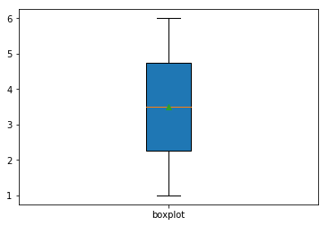
png
np.random.seed(2) # 设置随机种子
df = pd.DataFrame(np.random.rand(5, 4),
columns=(['A', 'B', 'C', 'D']))
dfdata = []
for i in range(4):
data.append(df.iloc[:, i])
data[0 0.435995
1 0.420368
2 0.299655
3 0.134580
4 0.853975
Name: A, dtype: float64, 0 0.025926
1 0.330335
2 0.266827
3 0.513578
4 0.494237
Name: B, dtype: float64, 0 0.549662
1 0.204649
2 0.621134
3 0.184440
4 0.846561
Name: C, dtype: float64, 0 0.435322
1 0.619271
2 0.529142
3 0.785335
4 0.079645
Name: D, dtype: float64]plt.boxplot(data)
plt.show()
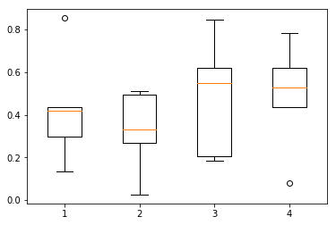
png
plt.boxplot(x, notch=None, sym=None, vert=None,
whis=None, positions=None, widths=None,
patch_artist=None, meanline=None, showmeans=None,
showcaps=None, showbox=None, showfliers=None,
boxprops=None, labels=None, flierprops=None,
medianprops=None, meanprops=None,
capprops=None, whiskerprops=None)
x：指定要绘制箱线图的数据；
notch：是否凹口的形式展现箱线图，默认非凹口；
sym：指定异常点的形状，默认为+号显示；
vert：是否需要将箱线图垂直摆放，默认垂直摆放；
whis：指定上下须与上下四分位的距离，默认为1.5倍的四分位差；
positions：指定箱线图的位置，默认为[0,1,2…]；
widths：指定箱线图的宽度，默认为0.5；
patch_artist：是否填充箱体的颜色；
meanline：是否用线的形式表示均值，默认用点来表示；
showmeans：是否显示均值，默认不显示；
showcaps：是否显示箱线图顶端和末端的两条线，默认显示；
showbox：是否显示箱线图的箱体，默认显示；
showfliers：是否显示异常值，默认显示；
boxprops：设置箱体的属性，如边框色，填充色等；
labels：为箱线图添加标签，类似于图例的作用；
filerprops：设置异常值的属性，如异常点的形状、大小、填充色等；
medianprops：设置中位数的属性，如线的类型、粗细等；
meanprops：设置均值的属性，如点的大小、颜色等；
capprops：设置箱线图顶端和末端线条的属性，如颜色、粗细等；
whiskerprops：设置须的属性，如颜色、粗细、线的类型等；6.2.6 饼图
data = [0.2, 0.3, 0.4, 0.1]
plt.pie(data)
plt.show()
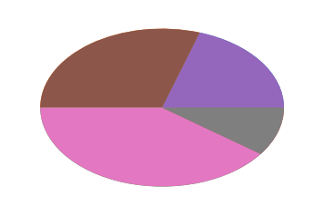
png
plt.pie(x, explode=None, labels=None, colors=None,
autopct=None, pctdistance=0.6, shadow=False,
labeldistance=1.1, startangle=None,
radius=None, counterclock=True, wedgeprops=None,
textprops=None, center=(0, 0), frame=False)
x：指定绘图的数据；
explode：指定饼图某些部分的突出显示，即呈现爆炸式；
labels：为饼图添加标签说明，类似于图例说明；
colors：指定饼图的填充色；
autopct：自动添加百分比显示，可以采用格式化的方法显示；
pctdistance：设置百分比标签与圆心的距离；
shadow：是否添加饼图的阴影效果；
labeldistance：设置各扇形标签（图例）与圆心的距离；
startangle：设置饼图的初始摆放角度；
radius：设置饼图的半径大小；
counterclock：是否让饼图按逆时针顺序呈现；
wedgeprops：设置饼图内外边界的属性，如边界线的粗细、颜色等；
textprops：设置饼图中文本的属性，如字体大小、颜色等；
center：指定饼图的中心点位置，默认为原点
frame：是否要显示饼图背后的图框，如果设置为True的话，需要同时控制图框x轴、y轴的范围和饼图的中心位置；6.2.7 绘制基因矩阵的热图
# 来源于百度经验
import numpy as np
from matplotlib import pyplot as plt
from matplotlib import cm
from matplotlib import axes
def draw_heatmap(data, xlabels, ylabels): # 自定义函数，3个参数
cmap = cm.Blues
figure = plt.figure(facecolor='w')
ax = figure.add_subplot(1, 1, 1, position=[0.1, 0.15, 0.8, 0.8])
ax.set_yticks(range(len(ylabels)))
ax.set_yticklabels(ylabels)
ax.set_xticks(range(len(xlabels)))
ax.set_xticklabels(xlabels)
vmax = data[0][0]
vmin = data[0][0]
for i in data:
for j in i:
if j > vmax:
vmax = j
if j < vmin:
vmin = j
map = ax.imshow(data, interpolation='nearest', cmap=cmap, aspect='auto',
vmin=vmin, vmax=vmax) # interpolation插值，cmap:colormap
cb = plt.colorbar(mappable=map, cax=None, ax=None, shrink=0.5) # 绘制颜色条
plt.show()
a = np.random.rand(10, 10)
xlabels = ['A', 'B', 'C', 'D', 'E', 'F', 'G', 'H', 'I', 'J']
ylabels = ['a', 'b', 'c', 'd', 'e', 'f', 'g', 'h', 'i', 'j']
draw_heatmap(a, xlabels, ylabels)
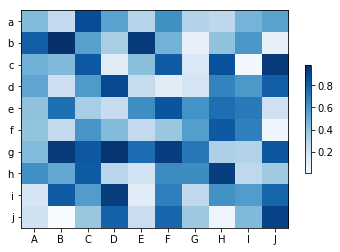
png
import pandas as pd
import numpy as np
df = pd.DataFrame(np.random.randn(5, 6))
dfplt.imshow(df)
plt.show()
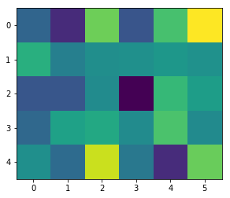
png
读入基因表达数据，绘制某基因的箱线图
%cd F: \mega\ehbio\python\python课程包\merge
import os
os.getcwd()F:\mega\ehbio\python\python课程包\merge
'F:\\mega\\ehbio\\python\\python课程包\\merge'import pandas as pd
df = pd.read_table("ehbio.xls", sep="\t", index_col=0, header=0)
df.head(5)df.shape(36953, 8)df.size
df.ndim
df.valuesarray([[ 9.15740610e+01, 1.30408701e+01, 7.33873101e+01, ...,
3.18129988e+01, 1.21459918e+02, 2.29389818e+00],
[ 1.64221408e+02, 1.70101403e+02, 1.06114416e+02, ...,
6.84580224e+01, 7.39109636e+01, 6.16255191e+01],
[ 0.00000000e+00, 7.36800986e-02, 5.36226145e-01, ...,
5.48864965e-01, 6.11036013e-01, 5.56531115e-01],
...,
[ 2.71701826e+00, 5.55925621e+00, 2.93123839e+00, ...,
3.71765369e+00, 2.42540639e+00, 4.56656068e+00],
[ 1.74266818e+01, 3.72964028e+00, 3.49013629e+01, ...,
5.04982802e+01, 3.75784692e+01, 4.79996494e+01],
[ 0.00000000e+00, 0.00000000e+00, 3.52988338e+00, ...,
8.15259649e+00, 6.08178979e-01, 3.25252710e+00]])control = []
for i in range(3):
control.append(df.iloc[0, i])
control[91.574060981100004, 13.0408701074, 73.387310079800002]test = []
for i in range(3, 8):
test.append(df.iloc[0, i])
test[26.579280359299997,
50.676578905299998,
31.812998762600003,
121.4599177489,
2.2938981847999997]gene = [control, test]fig = plt.figure()
ax = fig.add_subplot(1, 1, 1)
ax.boxplot(gene, patch_artist=True, # 箱体添加颜色
labels=['test', 'control'], # 添加具体的标签名称
showmeans=True, )
plt.show()
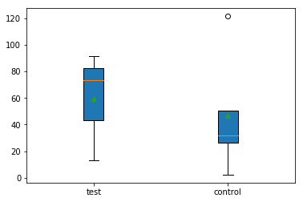
png
热图
df2 = df.head(10) # 取部分数据df2i = plt.imshow(df2)
plt.colorbar(i)
plt.show()
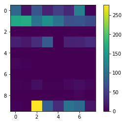
png